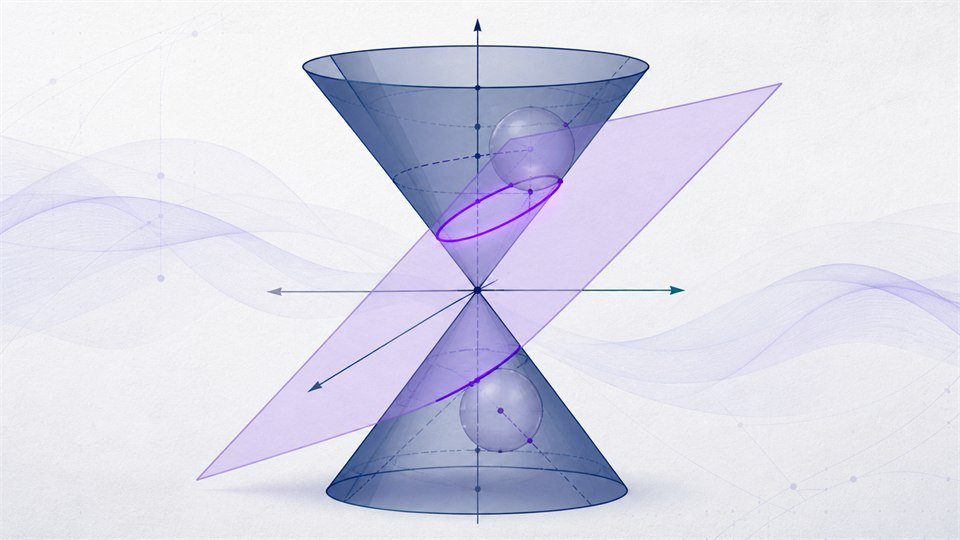
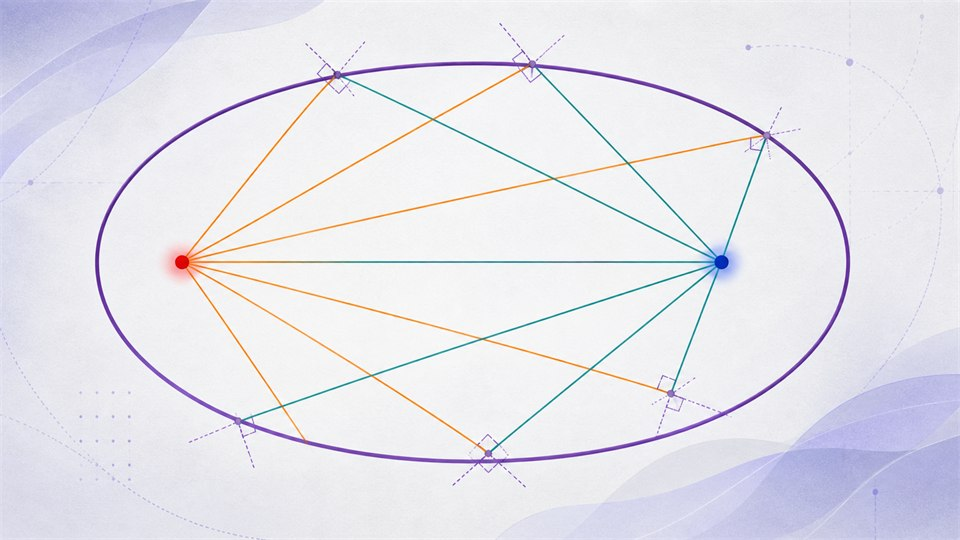

Geometry
기하 웹앱
도형의 성질, 벡터의 움직임, 공간좌표의 관계를 눈으로 확인합니다.

원뿔을 잘라보면? 이차곡선 탐구
원뿔을 자르는 각도와 높이에 따라 원·타원·포물선·쌍곡선이 만들어지는 과정을 3D로 보고, 단델린 구로 초점의 정체를 증명합니다.

이차곡선 반사 실험실
이심률 하나로 원·타원·포물선·쌍곡선을 이으며, 초점에서 나온 빛이 반사되어 모이거나 흩어지는 과정을 표준형과 연속 변형 두 관점으로 탐구합니다.
이차곡선 반사 실험실 3D
이차곡선을 초점을 포함한 축으로 회전시킨 곡면(구·회전타원면·회전포물면·회전쌍곡면)에서, 초점에서 나온 빛이 3차원 공간 전체에서 어떻게 모이거나 흩어지는지 직접 회전시켜 확인합니다.
쌍둥이 곡면 반사 실험실 3D
같은 종류의 회전곡면 거울 두 개를 마주 보게 놓고, 한쪽 초점에서 나온 빛이 간격을 지나 반대쪽에서 정말로 다시 모이는지 곡면 종류별로 비교합니다. 포물면만 간격과 상관없이 항상 정렬되는 이유를 직접 확인합니다.